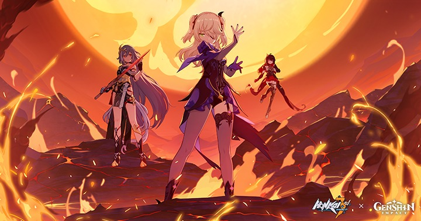

NOSOTROS · UN ARCHIVO DE FANS
Una aventura para recordar
Un espacio dedicado a la colaboración que reunió a dos universos en 2021.
EL PROYECTO
Dos mundos, una historia
Outworld Traveler es un sitio creado para recordar el encuentro entre Honkai Impact 3rd y Genshin Impact. Aquí reunimos imágenes, videos y detalles de una aventura que llevó personajes de Teyvat a un nuevo mundo.

NUESTRA MOTIVACIÓN
El recuerdo de un encuentro
La versión 4.9 de Honkai Impact 3rd abrió una puerta a Teyvat. Fischl y Oz se sumaron al combate, mientras Keqing apareció como invitada en la historia del evento.
Esta página reúne algunos de los momentos que hicieron especial esa colaboración: sus personajes, su estética y las aventuras de Outworld Quest.
El proyecto tiene fines educativos y es un homenaje de fans. Los personajes y las marcas pertenecen a sus respectivos propietarios.